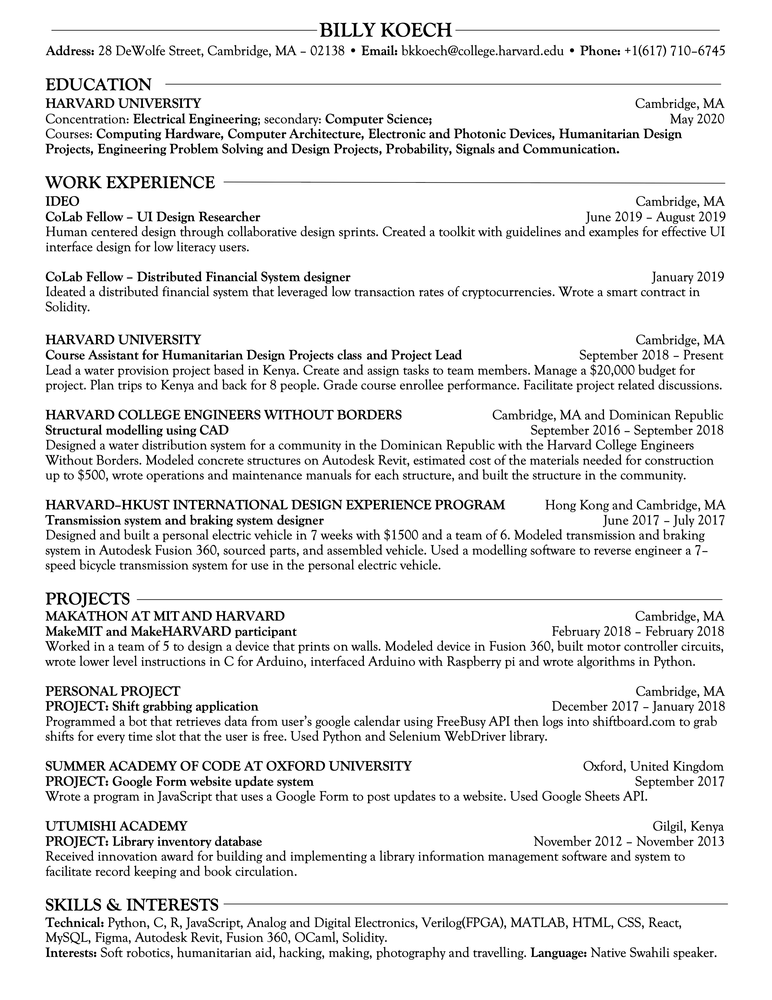

About
Hi There! Thank you for visiting my portfolio! I'm currently
a senior pursiuing my S.B. is Electrical Engineering with a
secondary in Computer Science at Harvard University. If any of the ideas here excite you please
reach out at contact@billykoech.com and I'll respond as soon
as I can.
I like to build different things ranging from software to
hardware of which I find the integration of the two most
exciting (as you can probably tell from the embedded
systems projects in my portfolio). Also check out the papers
page for detailed documentations the projects listed here.
